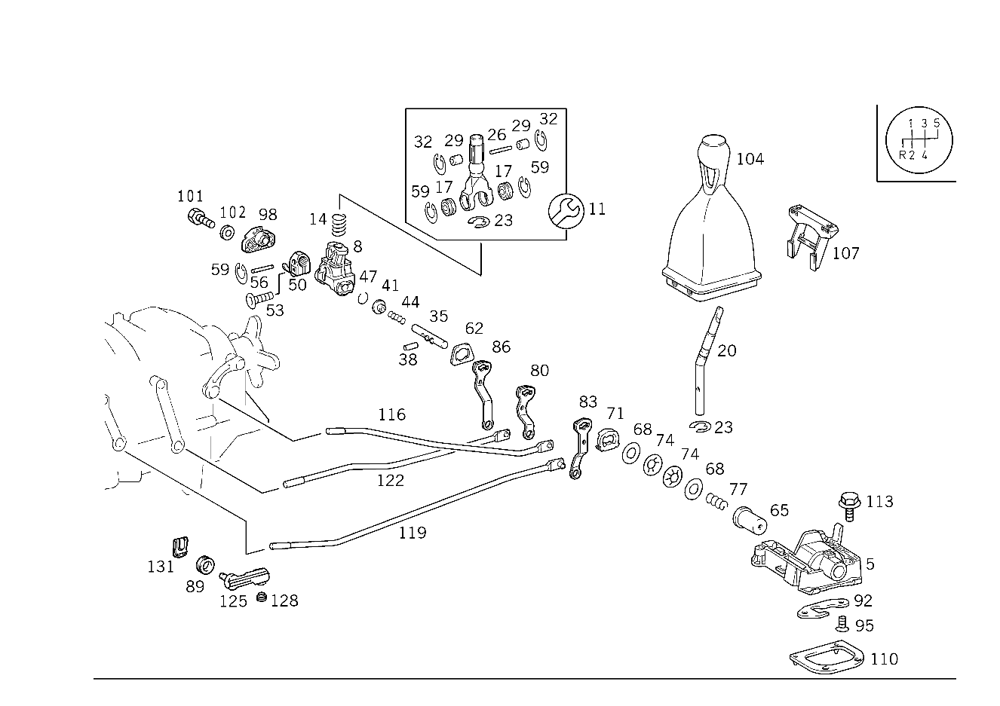

| № | Артикул | Название | Кол. | Примечание | Ограничение |
|---|---|---|---|---|---|
| 5 | A 124 260 13 94 | Опорный кронштейн (LAGERBOCK) | 1 | Рулевое управление: ВлевоКоробка передач | |
| 8 | A 202 267 01 61 | Кронштейн (TRAEGER) | 1 | Рулевое управление: ВлевоКоробка передач | |
| 11 | A 202 260 01 39 | Ремк-т рычага перекл. (REP.SATZ SCHALTHEBEL) | 1 | РЫЧАГ ПЕРЕКЛЮЧЕНИЯ Рулевое управление: ВлевоКоробка передач | |
| 14 | A 124 993 26 01 | пружина (FEDER) | 1 | РЫЧАГ ПЕРЕКЛЮЧЕНИЯ Рулевое управление: ВлевоКоробка передач | |
| 17 | A 140 267 04 50 | втулка (BUCHSE) | 2 | Рулевое управление: ВлевоКоробка передач | |
| 20 | A 170 267 00 01 | Рычаг перекл.передач (SCHALTHEBEL) | 1 | Рулевое управление: ВлевоКоробка передач | |
| 23 | N 006799 006003 | Стопорная шайба (SICHERUNGSSCHEIBE) | 1 | РЫЧАГ ПЕРЕКЛЮЧЕНИЯ; 6MM Рулевое управление: ВлевоКоробка передач | |
| 26 | A 201 267 16 74 | Палец (BOLZEN) | 1 | Рулевое управление: ВлевоКоробка передач | |
| 29 | A 201 267 00 50 | втулка (BUCHSE) | 2 | Рулевое управление: ВлевоКоробка передач | |
| 32 | N 006799 002302 | ПРЕДОХР. ШАЙБА (SICHERUNGSSCHEIBE) | 2 | Рулевое управление: ВлевоКоробка передач | |
| 35 | A 124 260 04 82 | Тяга переключения передач (SCHALTROHR) | 1 | Рулевое управление: ВлевоКоробка передач | |
| 38 | A 115 991 03 01 | - Палец (BOLZEN) | 2 | Рулевое управление: ВлевоКоробка передач | |
| 41 | A 201 267 10 76 | - Диск (SCHEIBE) | 1 | ТЯГА ПЕРЕКЛЮЧЕНИЯ Рулевое управление: ВлевоКоробка передач | |
| 44 | A 124 993 21 01 | - пружина (FEDER) | 1 | ТЯГА ПЕРЕКЛЮЧЕНИЯ Рулевое управление: ВлевоКоробка передач | |
| 47 | N 912009 013200 | - Пруж. стопорное кольцо (SPRENGRING) | 1 | ТЯГА ПЕРЕКЛЮЧЕНИЯ Рулевое управление: ВлевоКоробка передач [402] БОЛЬШЕ НЕ ПОСТАВЛЯЕТСЯ | |
| 50 | A 202 267 00 41 | Упор (ANSCHLAG) | 1 | Рулевое управление: ВлевоКоробка передач | |
| 53 | A 201 990 11 20 | болт (SCHRAUBE) | 2 | T25 M5X16\-10.9 Рулевое управление: ВлевоКоробка передач | |
| 56 | A 201 267 14 74 | Палец (BOLZEN) | 1 | Рулевое управление: ВлевоКоробка передач | |
| 59 | A 004 994 45 41 | предохранитель (SICHERUNG) | 2 | Рулевое управление: ВлевоКоробка передач | |
| 62 | A 129 267 03 76 | Диск (SCHEIBE) | 1 | Рулевое управление: ВлевоКоробка передач | |
| 65 | A 129 267 00 50 | втулка (BUCHSE) | 1 | Рулевое управление: ВлевоКоробка передач | |
| 68 | A 129 267 00 52 | Дистанционная шайба (ABSTANDSSCHEIBE) | 2 | Рулевое управление: ВлевоКоробка передач | |
| 71 | A 124 267 00 76 | Диск (SCHEIBE) | 1 | Рулевое управление: ВлевоКоробка передач | |
| 74 | A 129 993 01 26 | Тарельчатая пружина (TELLERFEDER) | 2 | Рулевое управление: ВлевоКоробка передач | |
| 77 | A 201 993 61 01 | пружина (FEDER) | 1 | Рулевое управление: ВлевоКоробка передач | |
| 80 | A 210 260 00 37 | Рычаг (HEBEL) | 1 | ПЕРВАЯ И ВТОРАЯ ПЕРЕДАЧА Рулевое управление: ВлевоКоробка передач | |
| 83 | A 210 260 01 37 | Рычаг (HEBEL) | 1 | ТРЕТЬЯ И ЧЕТВЁРТАЯ ПЕРЕДАЧА Рулевое управление: ВлевоКоробка передач | |
| 86 | A 210 260 02 37 | Рычаг (HEBEL) | 1 | 5\-АЯ ПЕРЕДАЧА И ПЕРЕДАЧА ЗАДН. ХОДА Рулевое управление: ВлевоКоробка передач | |
| 89 | A 210 992 00 10 | втулка (BUCHSE) | 3 | Рулевое управление: ВлевоКоробка передач | |
| 92 | A 202 267 09 47 | Кулиса (KULISSE) | 1 | Рулевое управление: ВлевоКоробка передач | |
| 95 | A 201 990 12 20 | болт (SCHRAUBE) | 2 | Рулевое управление: ВлевоКоробка передач | |
| 98 | A 202 267 00 05 | Подшипник (LAGER) | 1 | Рулевое управление: ВлевоКоробка передач | |
| 101 | N 914130 006200 | Винт с неспадающей шайбой | - | Рулевое управление: ВлевоКоробка передач | |
| 101 | N 910106 006000 | Винт с 6-гранной головкой (SECHSKANTSCHRAUBE) | 2 | M6X12\-8.8\-MK Рулевое управление: ВлевоКоробка передач | |
| 102 | N 000125 006421 | Шайба | 2 | Рулевое управление: ВлевоКоробка передач | |
| 102 | N 000125 006449 | Шайба (SCHEIBE) | 2 | Рулевое управление: ВлевоКоробка передач | |
| 104 | A 170 267 02 10 | Ручка рычага перекл.пер. | 1 | Рулевое управление: ВлевоКоробка передач | |
| 104 | A 170 267 16 10 | РУЧКА | 1 | Рулевое управление: ВлевоКоробка передач | P26 |
| 107 | A 129 267 04 40 | Держатель (HALTER) | 1 | Рулевое управление: ВлевоКоробка передач | |
| 110 | A 201 267 03 80 | Уплотнительная прокладка (DICHTBEILAGE) | 1 | Рулевое управление: ВлевоКоробка передач | |
| 113 | N 914130 006100 | Винт (SCHRAUBE) | 4 | ПРИВОД ПЕРЕКЛЮЧЕНИЯ ПЕРЕДАЧ НА ТУННЕЛЕ КАРДАННОГО ВАЛА M 6X32 Рулевое управление: ВлевоКоробка передач | |
| 116 | A 170 260 03 33 | Тяга переключения передач (SCHALTSTANGE) | 1 | ПЕРВАЯ И ВТОРАЯ ПЕРЕДАЧА Рулевое управление: ВлевоКоробка передач | |
| 119 | A 170 260 04 33 | Тяга переключения передач (SCHALTSTANGE) | 1 | ТРЕТЬЯ И ЧЕТВЁРТАЯ ПЕРЕДАЧА Рулевое управление: ВлевоКоробка передач | |
| 122 | A 170 260 05 33 | Тяга переключения передач (SCHALTSTANGE) | 1 | 5\-АЯ ПЕРЕДАЧА И ПЕРЕДАЧА ЗАДН. ХОДА Рулевое управление: ВлевоКоробка передач | |
| 125 | A 202 268 02 27 | Головка штока (STANGENKOPF) | 3 | Рулевое управление: ВлевоКоробка передач | |
| 128 | A 000 990 40 77 | Шпилька (GEWINDESTIFT) | 3 | Рулевое управление: ВлевоКоробка передач | |
| 131 | A 000 994 41 60 | Стопор болта (BOLZENSICHERUNG) | 6 | ТЯГА ПЕРЕКЛ. ПЕРЕДАЧ Рулевое управление: ВлевоКоробка передач |
Позиций: 47 · подписано на схемах: 47 · колесо — плавный зум в курсор, перетаскивание — пан, двойной клик — зум, клик по артикулу — скопировать · наведите на строку или цифру на схеме — подсветка связки, клик — закрепить.